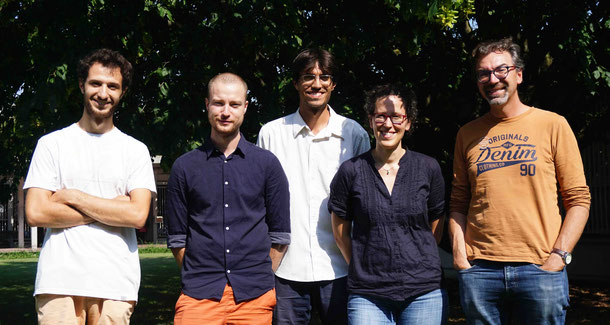

Some personnal pictures (travel and night sky pictures) can be found on my Flickr page. Some pictures of the cold atom experiment in Toulouse are shown here:
1 / 5

The experiment main table.
2 / 5

Some optics close to the vacuum chamber.
3 / 5

The vacuum chamber with cold atoms trapped (Magneto-Optical Trap).
4 / 5

You can see by fluorescence a cloud of cold atoms (the orange mark in the middle of the picture). Their temperature is a few hundreds of millikelvins.
5 / 5

The cold atom team (sept. 2019). Left to right: Nathan Dupont, Gabriel Chatelain, Maxime Arnal, Juliette Billy, David Guéry-Odelin.